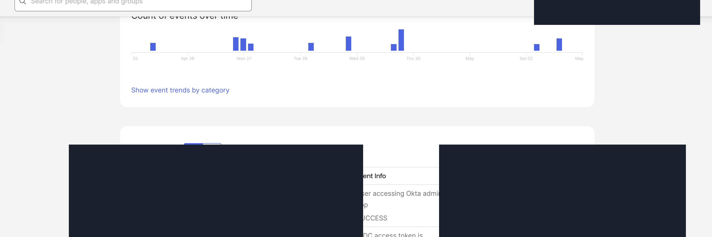
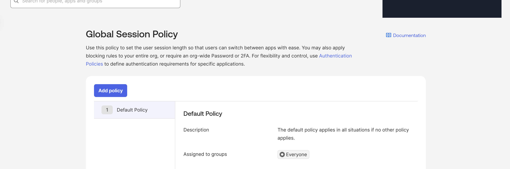
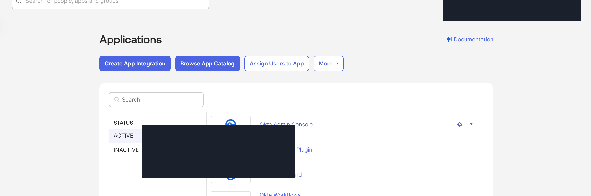
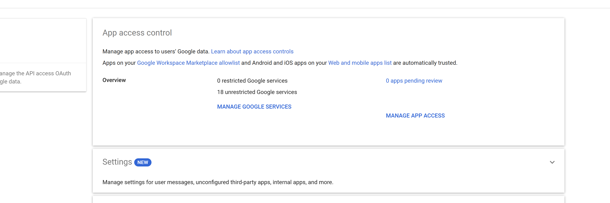
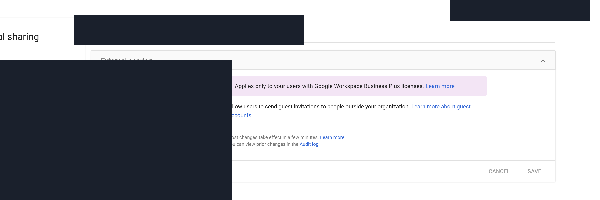
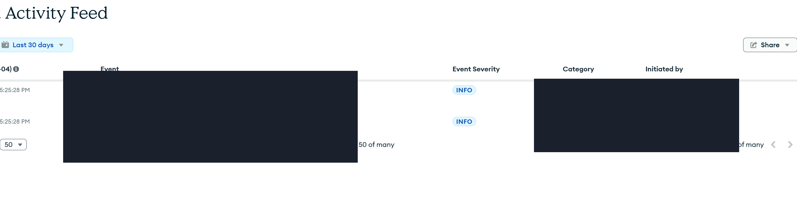
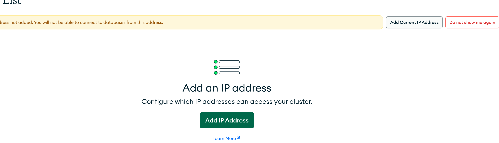
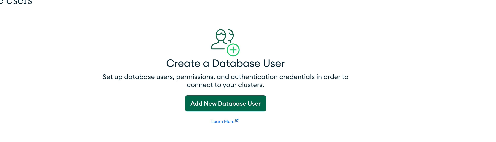

Credential stuffing to OAuth abuse
Okta -> Workspace
Public-safe security research dashboard
A static correlation map for modeled SaaS compromise paths across Okta identity activity, Google Workspace data access, and MongoDB Atlas database-layer events.
Correlation field
Four chains span Okta, Workspace, and Atlas. Four stop at Okta and Workspace when database-layer activity would not materially change the finding.
Okta -> Workspace
Okta -> Workspace
Okta -> Workspace -> Atlas
Okta -> Workspace
Okta -> Workspace -> Atlas
Okta -> Workspace -> Atlas
Okta -> Workspace
Okta -> Workspace -> Atlas
Telemetry weighting
Identity pressure, MFA challenge behavior, suspicious sessions, OAuth grants, policy changes, service account activity, and administrative role grants.
OAuth authorization, Drive downloads, external sharing, mailbox persistence, and administrative security changes.
Network exposure, database user privilege changes, and modeled query or export-like database activity.
Rule coverage
Identity carries the primary weight. Workspace extends the finding into SaaS data activity. Atlas supports chains where database-layer context changes the result.
Evidence catalog
Every screenshot is sanitized for public release. The Workspace audit report boundary is shown alongside the captured surfaces instead of being hidden in a footnote.

Evidence 01
Event-type structure and investigative fields with tenant and identity values redacted.

Evidence 02
Control configuration surfaces used to reason about authentication and policy changes.

Evidence 03
Application and OAuth management context with sensitive values hidden.
Evidence 04 - blocked
The lab account reached Google Admin but lacked the reporting privilege required for the Admin audit report.

Evidence 05
App access controls used to model broad authorization and scope expansion.

Evidence 06
Sharing controls that frame the external Drive exposure chains.

Evidence 07
Database-layer activity surface with organization and project identifiers removed.

Evidence 08
Network exposure control surface used for downstream database access modeling.

Evidence 09
Database access controls with usernames and account-specific details removed.
Validation
The repository evaluates Sigma-style rules against labeled positive, negative, and edge cases. Correlation is documented as auditable chain logic rather than a live SIEM claim.
$ npm run verify:all
structure verification pass
catalog quality pass
rule validation 24 / 24
release manifest pass
evidence catalog pass
static site pass
public-safe scan pass